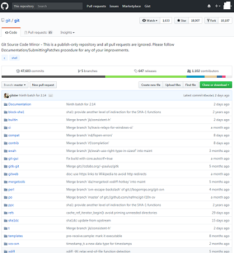
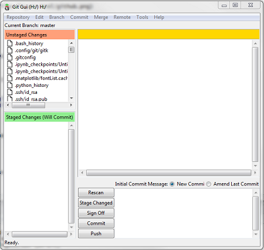
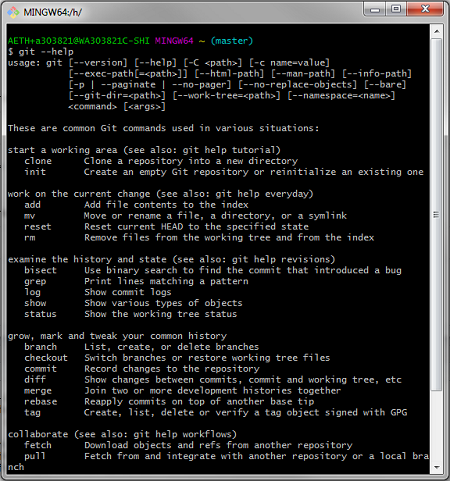
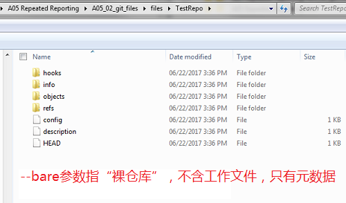
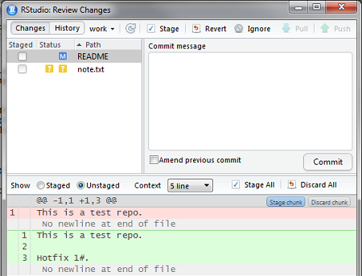

2017-06-23 20:06:13
目录
版本控制系统
版本的故事
版本控制
版本控制是一种记录一个或若干文件内容变化，以便将来查阅特定版本修订情况的系统。 - Git官方
版本控制的价值
- 统一管理文件的所有修订版本
- 回溯特定版本：单个文件甚或整个项目
- 比对所有修订细节
- 备份和灾难恢复
版本控制系统的演化
本地版本控制系统
如RCS

集中式版本控制系统
如SVN、ClearCase、VSS、CVS

分布式版本控制系统
如Git、BitKeeper、Mercurial

各版本管理系统比较
| 方面 | 本地式 | 集中式 | 分布式 |
|---|---|---|---|
| 速度 | 快 | 慢 | 快 |
| 网络要求 | 不需网络，离线 | 提交需联网 | 支持离线 |
| 灵活性 | 无法无天 | 集中式工作流 | 支持多工作流:parnter或集中式 |
| 数据完整性 | 易缺损 | 元数据可能缺失 | 按元数据方式存储，最完整 |
| 并行协作 | 难 | 一般 | 易 |
| 学习曲线 | 上手快 | 上手快 | 有一定学习曲线 |
| 应用场景 | 个人项目 | 企业项目 | 开源项目 |
Git
Git
- Linux之父Linus Torvalds缔造
- 最流行的分布式版本控制系统
- Git的源代码托管在全球最大代码托管平台GitHub上，GitHub则基于Git技术

安装及配置
安装
到Git官网，找到操作系统对应的安装文件/指导，执行安装
配置
全局(--global)设置用户名和email
$ git config --global user.name "John Doe" $ git config --global user.email johndoe@example.com
界面
GUI

Bash
RStudio中启用Git
Git Executable
Tools -> Global options -> Git Executable

启用git
Tools -> Project options -> 启用git

典型用法
- 代码库托管在Git服务器
- 开发者从服务器fork，在本地分支上开发
- 提交(commit)本地分支到服务器

- 创建本地分支:
git clone - 当前更改
- 添加文件:
git add - 移动/重命名:
git mv - 删除:
git rm
- 添加文件:
- 分支
- 操作分支:
git branch - 切换分支:
git checkout - 提交:
git commit
- 操作分支:
- 协作
- 从其他分支拉取:
git fetch / git pull - 推送到其他分支:
git push
- 从其他分支拉取:
例子
共享并行模式
共享目录中创建裸仓库
- 注意:
- 通过map network drive将共享目录所在位置创建为盘符，如Z: (否则RStudio可能无法正常工作)
- 共享目录对所有用户开放full control权限
- 裸仓库不保留工作文件，仅保存修改痕迹
- 方法
- 打开Git Bash，进入目标路径
cd <共享路径>/TestRepo # 伪代码 git init --bare

将共享仓库克隆到本地
- 注意:
- 本地仓库如为远程磁盘，也应映射一个盘符，如H:
- 方法1
- 在Git Bash中运行
git clone <共享路径>/TestRepo
- 方法2
- Rstudio中创建新项目
- Version Control -> git
- 填入url、repo名称和本地路径

本地工作分支
创建分支
git checkout -b work

切换分支
git checkout master
删除分支
git branch -d work
查看更改
- 默认分支为master，建议先做一次初始化提交
- 切到work分支，新增note.txt，并修改REAME
Bash
$ git status
On branch work
Changes not staged for commit:
(use "git add <file>..." to update what will be committed)
(use "git checkout -- <file>..." to discard changes in working directory)
modified: README
Untracked files:
(use "git add <file>..." to include in what will be committed)
note.txt
GUI
状态更改
- git系统下，文件状态包括
- untracked: 未跟踪，新增加的文件。
git add则添加跟踪。 - tracked: 已跟踪，包括三种
- unmodified: 未更改
- modified: 已更改
- staged: 已暂存
- untracked: 未跟踪，新增加的文件。
- 将暂存(staged)的文件提交(commit)到本地仓库，形成一个快照
git log查看提交历史- 每次提交，都会检查sha1校验和，确保文件完整性
- 该sha1 Hash值就是本次commit的ID
$ git add *
$ git commit -m "add note.txt"
[Work a50dba4] add note.txt
2 files changed, 1 insertions(+)
create mode 100644 note.txt
$ git log
commit 42e62ea88fddc...57bc9a (HEAD -> work)
Author: John Doe <john.doe@example.com>
Date: Fri Jun 23 15:03:52 2017 +0800
add note.txt
commit add2d1ec93d...3637c2 (origin/master, master)
Author: John Doe <john.doe@example.com>
Date: Fri Jun 23 15:02:17 2017 +0800
init
版本管理 (1): git tag
- 继续修改note.txt
- 某个关键版本设置版本号v1.0
echo $'hotfix 1:\r\n' > note.txt echo $'\t1. Foo.\r\n\t2. Bar.' >> note.txt git add . git commit -m "hotfix 1" git tag -a "v1.0" -m "Ver 1.0" echo $'\r\nhotfix 2:\r\n' >> note.txt echo $'\t1. Ti.\r\n\t2. Da.' >> note.txt git add . git commit -m "hotfix 2" echo $'\r\nhotfix 3:\r\n' >> note.txt echo $'\t1. Ha.\r\n\t2. HaHa.' >> note.txt git add . git commit -m "hotfix 3" git log --all
- 能够看到work分支下的新提交
$ git log
commit 8aea41c3...0b4bc3 (HEAD -> work)
Author: John Doe <john.doe@example.com>
Date: Fri Jun 23 15:09:23 2017 +0800
hotfix 3
commit 79784f72...203665e
Author: John Doe <john.doe@example.com>
Date: Fri Jun 23 15:09:18 2017 +0800
hotfix 2
commit 4fd9edc7e...58d2f1 (tag: v1.0)
Author: John Doe <john.doe@example.com>
Date: Fri Jun 23 15:08:59 2017 +0800
hotfix 1
commit 42e62ea88fddc9...5c57bc9a
Author: John Doe <john.doe@example.com>
Date: Fri Jun 23 15:03:52 2017 +0800
add note.txt版本管理 (2): 查看快照
- 通过commit sha1的前7位或tag指定快照
- 我想要采用v1.0时的note.txt
$ git checkout v1.0 HEAD is now at 4fd9edc... hotfix 1
- 此时，指针位于历史提交位置，即头-指针分离(detached HEAD)状态
$ vi note.txt
hotfix 1:
1. Foo.
2. Bar.版本简化/回退: git reset
- 我们希望把hotfix 1-3的更改都整合为v1.0，简化提交链
- 使用git reset –mixed，将指针退回v1.0的前次提交
- 如参数设为–hard，则直接丢弃v1.0后的所有更改，即硬回退
- 其他可选参数包括–soft、–merge等
- 重新git commit，将hotfix 1以后的变化整合在一次提交里
$ git reset --mixed 42e62ea Unstaged changes after reset: M note.txt
- 查看提交历史，只剩下hotfix 1之前的一次提交
$ git log
commit 42e62ea88f...bc9a (HEAD -> work)
Author: John Doe <john.doe@example.com>
Date: Fri Jun 23 15:03:52 2017 +0800
add note.txt
- 重新整合提交，生成新的v1.0
git add. git commit -m "hotfix 1-3" git tag -f "v1.0" -m "Ver 1.0"
将本地分支推送到共享仓库
git checkout work git push -u
相当于
git push origin work
如共享仓库并没有work分支，需要设定远程上游
git push --set-upstream origin work
从共享拉取远程提交
- 只拉取
- 拉取后要手动合并(
git merge)
- 拉取后要手动合并(
git checkout work git fetch
- 拉取并合并
git pull
合并分支
git diff查看不同分支的差异
$ git diff master work diff --git a/README b/README index e69de29..4baf047 100644 --- a/README +++ b/README @@ -0,0 +1 @@ +Hello world. \ No newline at end of file diff --git a/note.txt b/note.txt new file mode 100644 index 0000000..0de80fa --- /dev/null +++ b/note.txt @@ -0,0 +1,14 @@ +hotfix 1: + + 1. Foo. + 2. Bar. :
git merge合并分支- 如出现冲突，必须处理掉冲突才能合并
$ git merge master work Updating add2d1e..6060ff4 Fast-forward README | 1 + note.txt | 14 ++++++++++++++ 2 files changed, 15 insertions(+) create mode 100644 note.txt
学习资源
- 官网: https://git-scm.com/book/zh/v2/
- 动手练习: Try Git
- 技术博客: 廖雪峰的Git教程
Thank you!